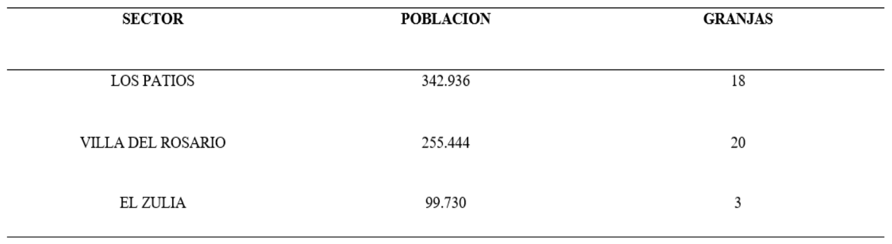
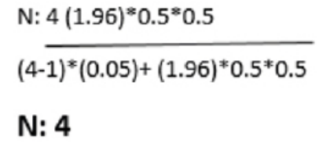
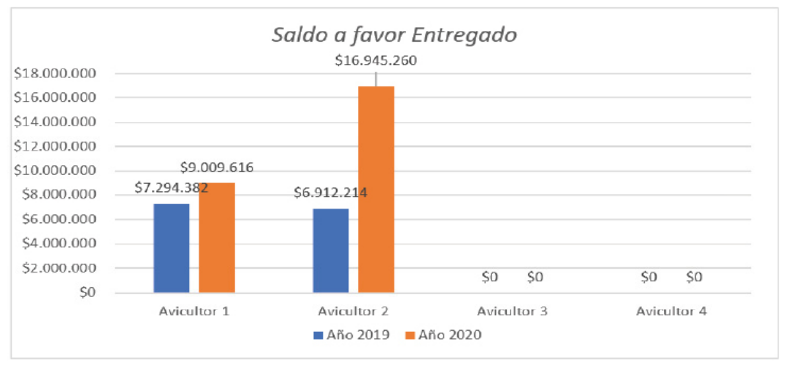
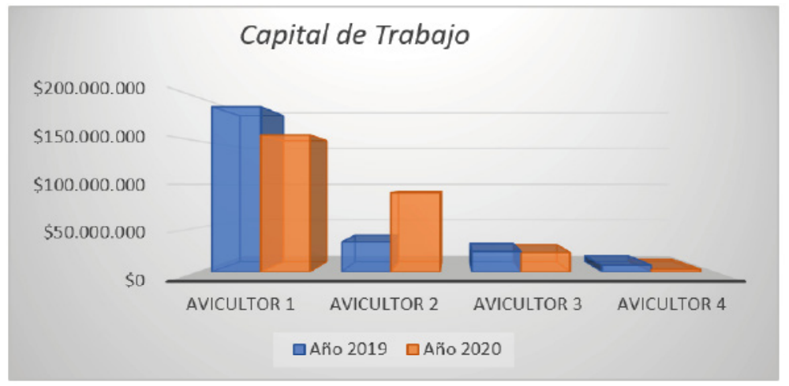
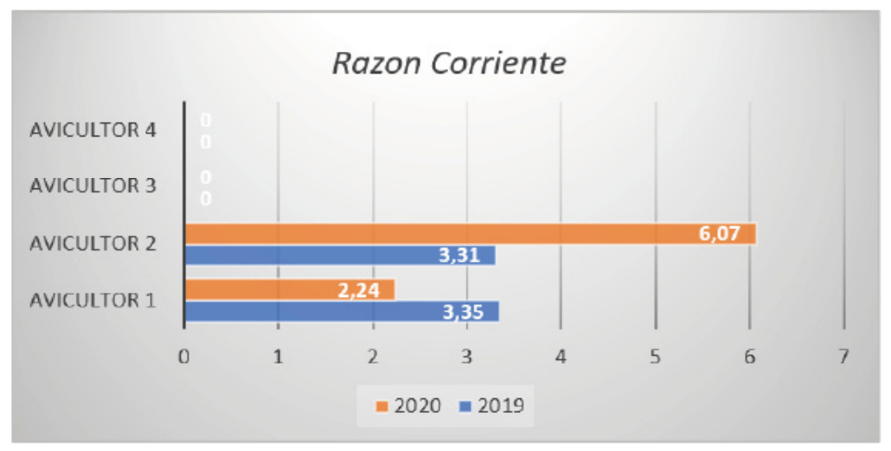
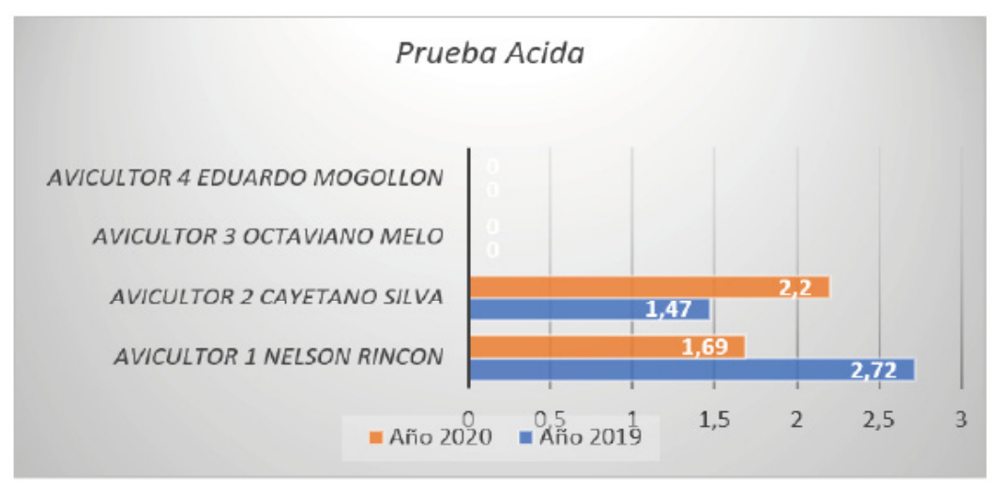
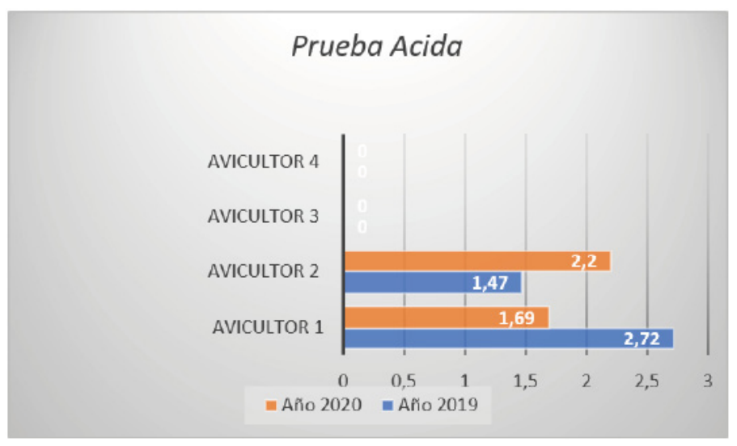
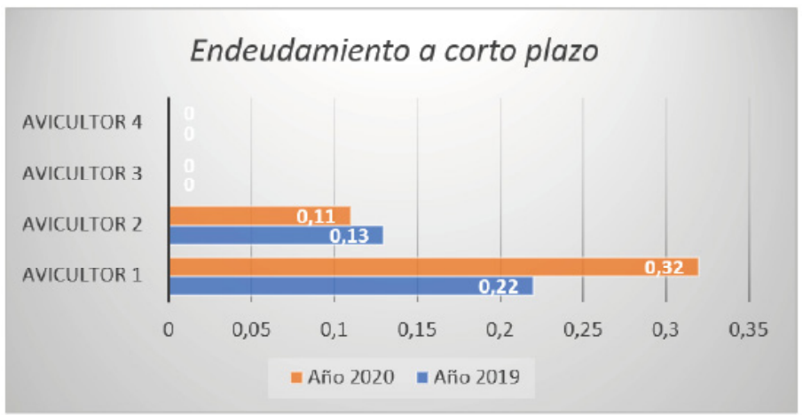
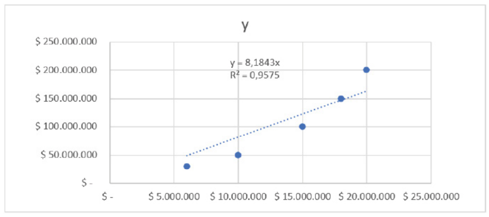

Introducción
El sector Avícola en Colombia es considerado
una de las más grandes figuras en el avance
agropecuario (Burgos, 2020), Durante el
año 2018 se presentó un gran avance en la
producción de huevo y de pollo de 2.500.000
toneladas muchos mejor que en otros años,
lo cual va exclusivamente a los hogares de los
colombianos debido a que ha aumentado el
consumo de pollo y de huevos por su gran
aporte nutricional, bajos precios y excelente
calidad, por lo mismo se obtuvieron cifras en
generación de pollo de 1.624.000 toneladas
lo que reportó un crecimiento del 3.9% a
diferencia del año anterior y en huevos de
14.606 millones de unidades y un crecimiento
del 5.6% (FENAVI, 2018); la industria en norte
de Santander ya lleva varias décadas, se
produce aproximadamente 50 % en pollo
de engorde y un 50 % en huevos(Censo
Avícola de Norte de Santander, 1988) Las
pymes avicultoras en el municipio de Cúcuta
tiene como principal objetivo sobrevivir,
atendiendo a todas las transformaciones que
exige el consumo y la demanda; pero son
esencialmente unos principales puntos los
que aprietan a nuestras pymes, como lo son
falta de liquidez, que además se alinea con la
falta de capital de trabajo o de recursos que
le permitan cumplir con todos sus deberes y
obligación como inicialmente es el pago de
nómina, y deudas a corto plazo; esto lleva a que
nuestros empresarios deban tomar decisiones
drásticas como el cierre de sus operaciones, lo
cual aumenta la tasa de desempleo en el país.
(Ortega, 2021)
En Colombia el IVA o impuesto al valor
agregado es una obligación que tenemos
todos los ciudadanos por lo que está ligado
directamente a todas las tareas de bienes,
servicios y consumos, el autor Hoyos (2014)
habla sobre el IVA como un impuesto de gran
importancia, siendo el primer eslabón para que
el gobierno recaude dinero, permite que no exista la evasión. Este impuesto es un tributo
que causa un acontecimiento en el ámbito de
consumos, bienes y servicios, además en los
juegos de azar y suerte (Villasmil y Polo, 2018).
Es considerado además como una carga fiscal
ha tenido además muchas modificaciones,
pero ha terminado adaptándose al nivel
socioeconómico lo que ayuda a que se
modifique las formas administrativas y de
parte en el estado (Ramírez, 2012); proviene
desde el imperio romano, y en ese tiempo
era usado para respaldar las guerras del
imperio y así poder conquistar muchas más
tierras y animales (García & Pulgar, 2010).
Por consiguiente son más particulares, una
de las ventajas que infieren todos los que
protegen el IVA con deudas (Gómez Sabaini &
Morán, 2020). Este genera más ganancia para
reportar y que se puede ver mucho mayor, al
lado del no pago de impuestos a diferencia
del IVA por sustracción o los impuestos a las
ventas. Para añadir, este tributo se genera
en una sola parte del proceso productivo
(Acosta Rodríguez et al., 2015); por lo tanto,
si no se quiere pagar tenemos perdidas
en la totalidad del recaudo. El IVA, por lo
mismo se distribuye el ingreso de la nación
entre las diferentes etapas de la producción
(Universidad de Antioquia. Departamento de
Economía. & Universidad de Antioquia. Centro
de Investigaciones Económicas., 1980) Los
avicultores del municipio de Cúcuta producen
y comercializan productos exentos, como lo
son la gallina y el huevo donde al momento
de venderlo, su IVA está a la tarifa del 0%;
pero en cambio en el momento de comprar
el alimento concentrado este está gravado a
la tarifa del 5 %, las vacunas que deben aplicar
en el proceso de crecimiento de la gallina va
gravada al 5%, los cartones donde depositan
los huevos van gravados al 19%; por lo cual
vemos que al avicultor se le impone un IVA
descontable que no lo encuentra nunca como
un IVA generado, lo cual conlleva a que en
el trascurrir del tiempo nuestros avicultores
puedan tener problemas de liquidez, ya que al invertir un dinero que no recupera en su venta,
no permite que la empresa pueda tener una
buena solvencia, donde ya no pueda cumplir
con sus gastos y demás obligaciones.
La devolución o compensación del IVA es el
final de liquidación particular, que ejecuta
una persona jurídica o un contribuyente
(Devoluciones et al., 2019) en su declaración
de impuesto y que puede ser con un saldo a
favor lo cual genera una deuda (Contribuyente)
y deudor (Estado) (Procedimiento Para La
Devolución Del IVA, 2022) cuando se da esta
situación en el que el aportante tiene una
cuenta por cobrar a la Dirección de Impuestos
y aduanas Nacionales (DIAN) la cual puede
solicitarlo, teniendo en cuenta todos los
requisitos y documentos que se le exigen.
(Alberto et al., 2005) además, La liquidez
nos señala el flujo de la situación financiera
general de la empresa, quiere decir, la facilidad
que tiene la empresa para solucionar todas
sus deudas y obligaciones(Herrera Freire et al.,
2017) El avicultor que por desconocimiento o
porque su petición no fue positiva no pueda
recibir este beneficio de devolución del IVA
puede verse en problemas su capital de trabajo
ya que en el momento de comprar a él se le
descuenta un IVA que no va a recuperar en su
venta pues el producto que ofrece es exento.
(S. E. Cuenca, 2015)
El presente estudio se centra en el sector
compuesto por productores avícolas de norte
de Santander, tiene como propósito determinar
el efecto de la devolución o compensación del
IVA en la liquidez de las pymes avicultoras del
municipio de Cúcuta, para ello se propone a
dar respuesta a la siguiente pregunta ¿Cuál
es la incidencia de la devolución del IVA en la
liquidez de las pymes avicultoras del municipio
de Cúcuta?
Fundamentación teórica
Impuesto al valor agregado
Indicadores financieros
Existen varias acontecimientos en las que el
contribuyente puede aprovechar y realizar
el trámite para solicitud de saldos a favor
(Alberto et al., 2005) o a su vez compensarlo
con otros saldos que tenga a pagar, se
puede presentar como ejemplo cuando el
responsable tiene mayor cantidad de IVA
descontable y menor IVA generado o cuando
se tiene mayo retenciones en la fuente a título
de IVA(Actualícese, 2015);Cuando se trata de
bienes a los que hace referencia el artículo 477
del estatuto tributario, existe la posibilidad de
que le otorguen la devolución de IVA con un
periodo máximo de dos años y debe generar
factura electrónica no solo sino sus clientes y
proveedores para los reglamentos establecidos
en el Decreto 358 del 2020(Salas, 2022), la
devolución del impuesto solo será para los
contribuyentes que liquiden saldos a favor en
sus declaraciones tributarias según el estatuto
tributario(Procedimiento Para La Devolución
Del IVA, 2022), Se especifican todos los bienes
que están exentos del impuesto sobre las
ventas y están obligados a llevar en control
en la contabilidad todo de forma legal siendo
aceptados para adquirir en devolución(Estatuto
Tributario, n.d.) Según la ley 2155 de 2021 nos
dice que la devolución bimestral de todos los
saldos a favor se dará para los productores de
bienes exentos, solo en el caso de que todas
sus compras y ventas estén soportadas con
factura electrónica(Actualicese, n.d.); el plazo
para realizar la reclamación de este impuesto
son dos años a partir de la fecha de vencimiento
para declarar, este tiempo aplica también
para los impuestos como Iva,Renta,Ica entre
otros esta solicitud solo la podrán realizar los
contribuyentes que presenten saldos a favor
por retenciones que les han descontado o por
productos exentos(Gerencie, 2018)
Liquidez Financiera
La liquidez financiera es la habilidad que
tiene una empresa para generar dinero y
de forma más sencilla resolver sus deudas a
corto plazo, es la facilidad de convertir sus
activos en efectivo sin que pierdan ningún
valor en el proceso(Luna, 2021); Es la facilidad
con la que la empresa puede pagar sus
obligaciones en el menor tiempo posible
(Fontalvo et al., 2012), para conocer cuál es la
liquidez de una empresa es necesario utilizar
los siguientes indicadores financieros: Razón
corriente, Capital de trabajo, prueba ácida y
Activo corriente, estos indicadores permitirán
conocer la capacidad que tiene la empresa de
convertir sus activos corrientes en efectivo y
también conocer la capacidad para cancelar
sus deudas a un corto plazo(PINDA G, 2019)
esta investigación nos conlleva a analizar los
indicadores financieros que se necesiten para
conocer el nivel de liquidez de las empresas e
régimen común, para evaluar la relación que
tiene con la devolución del IVA y así reconocer
la influencia que tiene la devolución de saldos
a favor en la situación financieros de los
avicultores.(Cordier, 2019); en una empresa
se planifican muy bien los flujos monetarios
que permiten un buen funcionamiento en la
empresa (Cookson & Stirk, 2019)
Productores Avícolas en Cúcuta, Norte de
Santander
Todos los Avicultores del municipio de
Cúcuta que producen y comercializan bienes
exentos (Ariza, 2013), tienen derecho a
solicitar la devolución del IVA, que ya han
cancelado al momento de adquirir todos los
insumos necesarios para la producción de
huevos (Finca, 2022), ellos obtienen pollitas
las cuales alimentan las primeras 18 semanas
con alimento de pre iniciador las semanas
siguientes se les da un alimento de pre
postura los cuales están gravados con el 5%
(Italcol, 2022) , y además pagan un 19 % en las bandejas donde almacenan los huevos y deben
aplicarles vacunas que también están gravadas
al 19% (Agro, 2022) así mismo los comederos
y bebederos que usan van gravados al 5%
(Lhaura, 2022); Ellos tienen derecho a un IVA
descontable, ya que al final venden un bien
exento, los bebederos y los comederos son
parte fundamental en el proceso de la gallina
los cuales deben limpiarlos una vez al día
durante las dos primeras semanas y una vez
a la semana después de la tercera semana
(Marino, 2022) además ellos deben seguir
un procedimiento para que su granja sea
bio segura teniendo en cuenta las normas
de bioseguridad e infraestructura (3650,3651
y 3652 del 2014) que sean fiscalizados por
el instituto colombiano Agropecuario ICA Y
FENAVI (ICA, 2015)
Por consiguiente, los avicultores de Cúcuta
deberán solicitar en devoluciones saldos a
favor de manera virtual en cuanto cumplan
con los requisitos de factura electrónica
según el artículo 850 del estatuto tributario y
siguiendo con el decreto único tributario 1625
de 2016(Actualícese, 2017)
Materiales y métodos
La investigación es de tipo descriptivo y
cuantitativo (Rojas Cairampoma, 2015), a
través del cual se buscó medir los saldos a
favor generados por el IVA y su liquidez en las
empresas avicultoras del norte de Santander ,
por cuanto se basa en la revisión bibliográfica
de fuentes primarias, secundarias como
artículos científicos y tesis de grado obtenidos
de las fuentes de datos Google académico,
repositorios entre otros, haciendo uso de las
palabras clave IVA, devolución del IVA, Sector
Avícola, liquidez que permitieron la obtención
de 50 referencias para análisis de resultados
de esta investigación, la información se
recolectó por medio de los estados financieros
de avicultores, usando indicadores para
determinar su liquidez(Gerencie, 2018)
Población Y Muestra
La población que se escogió para realizar el estudio está integrada por avicultores pertenecientes
al municipio de norte de Santander
Tabla I. Población Y Muestra

Muestra:
N: Tamo de la Población: 4
Z: Nivel de Exactitud: 95%
P: Probabilidad de Éxito: 50%
Q: Probabilidad de Fracaso: 50%

Comportamiento de la devolución del IVA para productores del sector Avícola, periodo
2019-2020

Graph1Figura 1 efectivo recibido por concepto devolución de IVA
En la gráfica 1 se puede ver como el avicultor
número 1 y 2 que son los productores de
bienes exentos obtuvieron la devolución del
saldo a favor entre el año 2019 y 2020 el cual
tuvo variación de un año a otro por la cantidad
de aves que tenían en el momento como en el
caso del avicultor 2 Cayetano silva el aumento
del efectivo en el 2020 es notorio, este saldo en compensación devuelto es de gran
beneficio para los avicultores de nuestra zona
(Guerrero, 2019); para el avicultor 3 octaviano
Melo encontramos el caso no presenta saldo
recibido en estos años, entrevistando su
contadora pública presentaron la solicitud en
el años siguiente , ya que tienen un plazo de 2
años a partir de la fecha de vencimiento para declarar para solicitar el saldo a favor, debe presentarse
durante ese tiempo (DIAN, 2022). En el
caso del Avicultor número 4, vemos como en el año 2019 por presentarse extemporáneamente
la cual fue inadmitida lo cual afecta en gran manera ya que afecta su flujo de caja, no van
a tener como pagar salarios a sus trabajadores y en un tiempo se ven en la obligación de
disminuir la producción (FENAVI, 2020)
Liquidez para la evaluación capacidad de pago de las empresas avicultoras de la ciudad
de Cúcuta
Analizar la capacidad de pago permite a las empresas crear soluciones para problemas que se
presenten en el momento o ya sean futuros (Gerencie, 2018)

Figura 2 Capital De Trabajo
Se puede observar que en la gráfica 2 el avicultor
1 y 2 entre los años 2019 y 2020 tienen un
buen capital de trabajo aun después de pagar
sus deudas a corto plazo ya que sus capitales
están entre $90.593.260 y $156.436.616 en
el 2020 lo cual es un gran beneficio para la
empresa; los Activos corrientes en una empresa
deben de ser grandes para poder cubrir los
pasivos circulantes y esto brinda seguridad a
la empresa. (López et al., 2016)
Los avicultores 3 y 4 (gráfica 3) que sus capitales
de trabajo oscilan $3.207.000 y $22.040.000 en
el caso de ellos vemos que no tenían pasivos
corrientes (Corriente, 2008) , lo cual no afecta su
capital de trabajo, sim embargo al presentarse
alguna eventualidad deben recurrir a la venta
de sus activos los cual afectaría su liquidez; si
la empresa no puede mantener un nivel alto de capital de trabajo es posible que llegue a la
insolvencia (López et al., 2016)

Figura 3 Razón Corriente
Se puede deducir de la gráfica 5 que es los Avicultores 1 y 2 , al medir la razón la razón corriente
podemos comprobar que cuentan con recursos suficientes para poder cubrir sus deudas a corto
plazo, ya que si se encontraran en menos de 1 podrían estar sufriendo problemas de liquidez
(Gerencie, 2022) y en el caso de los avicultores 3 y 4 no se puede medir su razón corriente, ya
que no contaban con pasivos corrientes, no adquirieron créditos con terceros; se considera este
tipo de Indicador de liquidez nos enseña la capacidad que tiene la empresa para cubrir todas
sus obligaciones en un tiempo menor a un año (Gómez et al., 2012)

Figura 4 Prueba Acida
Se puede evidenciar que en la gráfica los avicultores 1 y 2 tienen una prueba acida mayor a 1 lo
cual significa que la empresa posee activos líquidos para hacer frente a sus pasivos corrientes
o deudas menores a un año sin afectar su inventario (Económica, 2022) y en los avicultores 3
y 4 no tienen pasivos corrientes lo cual dice que no financiaron con terceros. Lo cual significa
que los avicultores trabajan con recursos propios creando un mayor costo de financiamiento
(Fontalvo et al., 2012)

Figura 5. Prueba Acida

Figura 6. Endeudamiento a Corto Plazo
Se Observa en la gráfica que los avicultores
1 y 2 tienen un endeudamiento a corto
(Gutierrez, 2008) plazo menor a 0.40 en el año
2019 y 2020 lo cual significa que no poseen
deudas muy grandes que la empresa no
pueda solventar, pero si a su vez quiere decir
que poseen recursos que están siendo mal
aprovechados(M. R. Cuenca, 2014); en el caso
de los avicultores 3 y 4 no podemos medir su
endeudamiento a corto plazo ya que ellos no
poseen pasivos corriente no deben solventar
deudas a corto plazo, no participan acreedores
en sus activos, lo cual significa que sus activos
corriente le pertenecen a cabalidad.
Correlación de la devolución del IVA con la
el capital de trabajo de las empresas entre
el año 2019 y 2020
Cuando se realiza un análisis de información
de datos, la herramienta más práctica para
sacar conclusiones son las correlaciones, es una técnica de para analizar la relación de al
menos dos variables (Suárez, 2015)

Figura 7. Devoluciones del IVA- capital de trabajo. Avicultores 1 y 2
En la gráfica podemos evidenciar que la
correlación es positiva, ya que la devolución
del IVA y el capital de trabajo van en aumento
ya que al solicitar la devolución en el año
2019 y 2020 la cuentas Bancos aumentó
proporcionalmente, lo que le ayuda a una
mayor liquidez en el momento de responder
por deudas que sean cortas (Palomeque, 2008)
Se puede deducir que al ingreso del saldo
a favor perteneciente a los Avicultores 1 y 2
se fortalecieron sus activos corrientes, por
lo cual ayudó enormemente a la liquidez de
sus empresas como lo pudimos comprobar
en el capital de trabajo, razón corriente,
prueba ácida y endeudamiento a corto plazo
(Corriente, 2008), donde los resultados fueron
positivos, a pesar de que en unos años sus
pasivos corrientes fueron altos, permitió que
la empresa solventara sus deudas menores
años sin afectar sus activos y manteniendo al
margen su liquidez, ya en los avicultores 3 y 4
no podemos realizar un análisis ya que según
su contadora publica la solitud se radica el
siguiente año (Verona Martel, 2014)
Conclusiones
Al estudiar el caso de los Avicultores en norte
de Santander conocemos que el contador
público es el encargado de organizar toda la
documentación, como facturas electrónicas
tanto de clientes como de proveedores,
diligencias la solicitud y radicar los documentos,
todos bajo las normas establecidas y teniendo
en cuenta de llevar organización en toda la
contabilidad.
Se conoce que en el caso de los avicultores
donde realizan comprar gravadas pero su venta
es exenta al no recibir el saldo a favor otorgado
por el gobierno sea por desconocimiento o por
negligencia la liquidez de sus finanzas pueden
verse afectadas pues quedan en riesgo de no
poder con sus obligaciones, como vemos en el
caso 3 y el 4 no presentan saldos a favor por
concepto de devolución de IVA ya que según
su contadora pública radicaron la solicitud al
siguiente año, lo cual hace que sus activos
corrientes sean menores en esos años, y por
ende su capital de trabajo, para solventar
demás pagos que la empresa deba realizar,
en cambio los avicultores 1 y 2 si recibieron
el saldo a favor en esos años, favoreciendo su
liquidez.
Se puede concluir diciendo que, según lo
evaluado notamos como este saldo a favor
que el gobierno brinda a todos los avicultores
a nivel nacional sirve de gran ayuda para que
las empresas en este sector surjan y aumenten
cada vez más su producción, devolviéndoles
ese efectivo que entregaron como descontable y nunca recibieron como generado y así
ayudando para que su liquidez mejore cada
vez más.
Se evidencia que en varios casos de nuestros
avicultores en Cúcuta, norte de Santander, la
no solicitud de la devolución o saldo a favor,
se debe al desconocimiento del mismo, no
se conoce los términos, ni la documentación
requerida, formatos que se deben diligenciar
o sin una buena guía para que su solicitud no
sea inadmitida como en el caso del avicultor
número 4, su solicitud fue inadmitida ya la
presentó extemporáneamente, lo cual se
vuelve un riesgo para la liquidez del mismo,
ya que no cuenta con suficientes recursos para
cubrir todas sus obligaciones tanto de nómina
como financieras.
Referencias
- Acosta Rodríguez, D. L, (2015). Cartilla Práctica
impuesto al valor agregado (IVA).Cámara de
Comercio de Bogotá. http://bibliotecadigital.ccb.org.co/handle/11520/11788
- Actualice, (2022). Procedimiento para la
compensación y devolución de saldos a
favor.
https://actualicese.com/especialactualicese-procedimiento-para-lacompensacion-y-devolucion-de-saldos-afavor/#:~:text=¿Quiénes
pueden solicitar
la devolución, favor en sus declaraciones
tributarias.
- Actualícese. (2015). IVA, ¿Quiénes pueden solicitar
devolución y comprensión por saldos a favor?
https://actualicese.com/iva-quienes-puedensolicitar-devolucion-y-compensacion-porsaldos-a-favor/
- Actualícese. (2017). Procedimiento para la
compensación y devolución de Saldos a favor.
https://actualicese.com/especial-actualiceseprocedimiento-para-la-compensacion-ydevolucion-de-saldos-a-favor/
- Actualícese. (2022). Novedades en la devolución
Bimestral automática de saldos a favor
para productores de bienes exentos.https://
actualicese.com/novedades-en-la-devolucionbimestral-automatica-de-saldos-a-favor-paraproductores-de-bienes-exentos/#:~:text=La
Ley 2155 de 2021, todos los detalles al respecto.
- Agro, C. (2022). Equipos para insumos.
- Ariza, A. A. (2013). Perdida de liquidez
del sector avícola, ocasionado por
demoras en la devolución. [Tesis de
Posgrado, Universidad Militar Nueva
Granada]. https://repository.unimilitar.edu.co/bitstream/handle/10654/11133/ArizaAlexanderArturo2013.pdf?sequence=1&isAllowed=y
- Benavides Romero, J.A., Céspedes Aguirre, E.M.,
Trujillo López, J.L., (2005). Devoluciones o
compensaciones de impuestos y otros a favor de
contribuyentes. [Tesis de Pregrado, Pontificia
Universidad Javeriana]. https://repository.javeriana.edu.co/bitstream/handle/10554/9539/tesis06.pdf;sequence=1
- Berdejo Giovanetti, E., & Villasmil Molero,
M. D. C. (2019). Reflexión histórica del
IVA en Colombia y sus implicaciones en la
jurisprudencia nacional. JURÍDICAS CUC,
15(1), 163–186. https://revistascientificas.cuc.edu.co/juridicascuc/article/view/2139
- Burgos, C. (2020). Industria Avícola. Encuesta de
nutrición y alimentación avícola. Watt Blobal
Media.67 (4)
- Cordier. (2019). Gestión en el riesgo de liquidez
y su impacto en la gestión integral de la
empresa. [Tesis de Pregrado, Universidad
Católica de Colombia]. https://repository.ucatolica.edu.co/bitstream/10983/23640/1/
- Corriente, R. (2008). Pasivo corriente / inventarios.
- Cuenca, M. (2014). Análisis del endeudamiento en
una empresa cotizada: El caso de Pescanova.
[Tesis de Pregrado, Universidad Pontificia
Comillas]. https://repositorio.comillas.edu/xmlui/bitstream/handle/11531/288/TFG000113.pdf?sequence=1&isAllowed=y
- Cuenca, S. E. (2015). Universidad Técnica de
Ambato Universidad Técnica de Ambato.
Repositorio Institucional de La Universidad
Técnica de Ambato, 593(03), 119.
- DIAN (2019). Devoluciones y/o Compensaciones
saldo a favor en ventas. https://www.dian.gov.co/Transaccional/DevolucionesCompensacin/Devoluciones-y-o-Compensaciones-Saldo-aFavor-en-Ventas-V4.pdf
- Estatuto Tributario. (n.d.). Artículo 477: Bienes que
se encuentran exentos del impuesto. https://estatuto.co/477
- FENAVI. (2018). Sector Avícola en Colombia.
https://fenavi.org/#:~:text=Es%20el%20Programa%20de%20FENAVI,del%20cumplimiento%20de%20la%20legislaci%C3%B3n
- FENAVI. (2020). Devolución del IVA a los
avicultores. Fondo Nacional Avícola https://fenavi.org/wp-content/uploads/2018/05/Proceso_devolucion_iva.pdf
- Finca. (2022). Alimento para ponedoras. https://www.finca.co/
- Fontalvo, T., Vergara, J. C., & de la Hoz, E. (2012).
Evaluación del impacto de los sistemas de
gestión de la calidad en la liquidez y rentabilidad de las empresas de la zona industrial vía 40.
Pensamiento & Gestión, 32. https://doi.org/
http://dx.doi.org/10.1016/j.wear.2013.01.059
- García, J., & Pulgar, N. (2010). Globalización:
aspectos políticos, económicos y sociales.
Revista de Ciencias Sociales, 16(4), 709–720.
http://ve.scielo.org/scielo.php?script=sci_arttext&pid=S1315-95182010000400014&lng=es&nrm=iso&tlng=es
- Gerencie. (2018a).Devolución o compensación
de saldos a favor en impuestos. https://www.
gerencie.com/devolucion-o-compensacion-desaldos-a-favor-en-impuestos.html#:~:text=El
plazo%2C término o tiempo, tratarse de un
término general
- Gerencie. (2018b). Indicadores de liquidez. https://www.gerencie.com/indice-de-liquidez.html
- Gerencie. (2022). Razón Corriente. https://www.gerencie.com/razon-corriente.html
- Gómez Sabaini, J. C., & Morán, D. (2020).
Estrategias para abordar la evasión tributaria
en América Latina y el Caribe. Macroeconomía
Del Desarrollo, 215, 1–86. https://www.cepal.org/sites/default/files/publication/files/46301/S2000696_es.pdf
- Gómez, J. M., Herrera, F., & de la Hoz, G. (2012).
Análisis de los indicadores financieros. Revista
Facultad de Ciencias Económicas, 8(1), 14–26.
http://www.scielo.org.co/scielo.php?script=sci_abstract&pid=S1900-38032012000100002&lng=en&nrm=iso&tlng=es
- Guerrero, E. (2019). IVA Descontable Susceptible
Solicitar En Devolución, El De Carga
Impositiva, La Beneficio el Gasto Público.[Tesis de Maestría, Universidad Externa de
Colombia].Archivo Digital https://bdigital.uexternado.edu.co/entities/publication/d61f5871-ad84-4c3a-ab57-7ace1f2d0b8a
- Gutiérrez, L. F. (2008).Determinantes de la
Concentración de Deuda en el Corto Plazo para
Empresas del Sector Real de Colombia: Análisis
de Datos Panel Basado en Información Pública.,
Ensayos sobre política económica. 28 (62),
http://www.scielo.org.co/scielo.php?script=sci_arttext&pid=S0120-44832010000200005
- Herrera Freire, A. G., Betancourt Gonzaga, V.
A., Herrera Freire, A. H., Vega Rodríguez, S.
R., & Vivanco Granda, E. C. (2017). Razones
Financieras De Liquidez En La Gestión
Empresarial Para Toma De Decisiones.
Quipucamayo, 24(46), 153. https://doi.org/10.15381/quipu.v24i46.13249
- Hoyos. (2014). Reflexión histórica sobre el
IVA en Colombia y sus implicaciones
en la jurisprudencia nacional. https://revistascientificas.cuc.edu.co/juridicascuc/article/view/2139/2335
- ICA. (2015). ICA. https://www.ica.gov.co/
- Italcol. (2022). Alimento Ponedoras. https://italcol.com/producto/ponedora-campesina/
- Jaramillo, C & Tovar, J. El impacto del Impuesto
al Valor Agregado sobre el gasto en Colombia.
Lecturas de economía. In Lecturas de
Economía (68). http://www.scielo.org.co/scielo.php?script=sci_arttext&pid=S0120-25962008000100003&lng=en&nrm=iso&tlng=es
- Lhaura. (2022). Comederos y Bebederos. https://www.lhaura.com/productos-linea-avicola/
- López, Y., Venereo, N., Albuerne, M., & Casas, Y.
(2016). Administración financiera del capital de trabajo en la empresa mixta Havana Club
International S.A. Havana Club International
S.A, 68, 255–285.
- Luna, N. (2021). Liquidez financiera: ¿qué es y por
qué es importante? SoyEmprendedor. https://emprendedor.com/liquidez-financiera-quees-y-por-que-es-importante/
- Marino, A. S. (2022). Agro.
- Ortega, C. (2021). Falta de liquidez en las Pymes.
Pymas. https://www.pymas.com.co/ideaspara-crecer/finanzas-para-pymes/liquidezen-una-pyme-para-enfrentar-los-desafiosdiarios
- Palomeque, M. (2008). Revista Perspectivas.
Perspectivas, (21), 161–172. https://www.redalyc.org/pdf/4259/425942157009.pdf
- Peiro Ucha, A. (2022). Prueba Acida. https://economipedia.com/definiciones/test-acido.html
- Rojas Carampoma, M. (2015). Tipos de
investigación científica: Una simplificación
de la complicada incoherente nomenclatura
y clasificación. Revista Electrónica de
Veterinaria, 16(1), 21–24. https://www.redalyc.org/articulo.oa?id=63638739004
- Salas, M. (2022). Dian y la devolución del IVA.
https://www.dian.gov.co/normatividad/Normatividad/Resoluci%C3%B3n%20000489%20de%2029-04-2022.pdf
- Suarez. (2015). Correlación.
- Universidad Francisco De Paula Santander
Ocaña Documento Formato Hoja De
Resumen Para Trabajo De Grado Código
F-Ac-Dbl-007 A Dependencia División De
Biblioteca Aprobado Subdirector Académico.
- Verona Martel, M. C. (2014). Finanzas Corporativas.
Innovar, 24(52), 124. https://doi.org/10.15446/
innovar.v24n52.42612